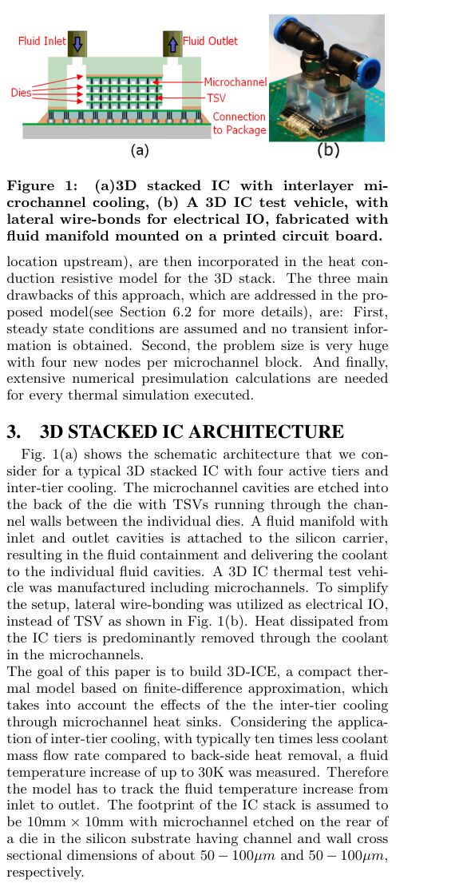
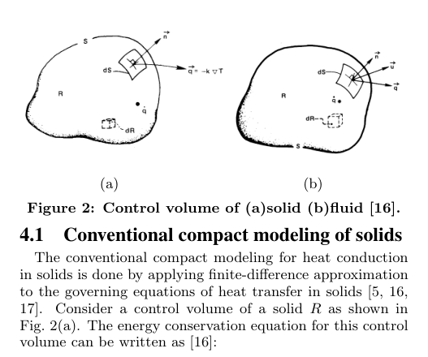
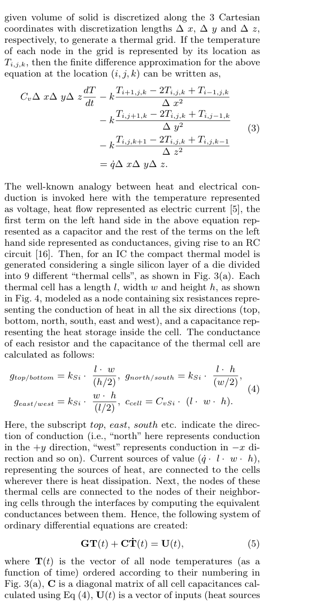
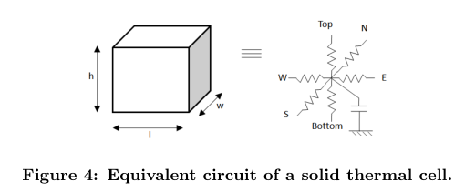
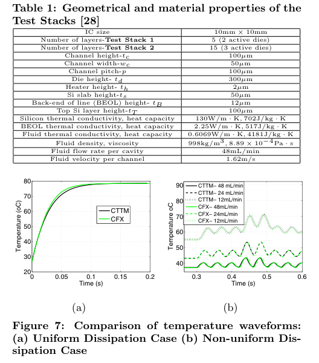
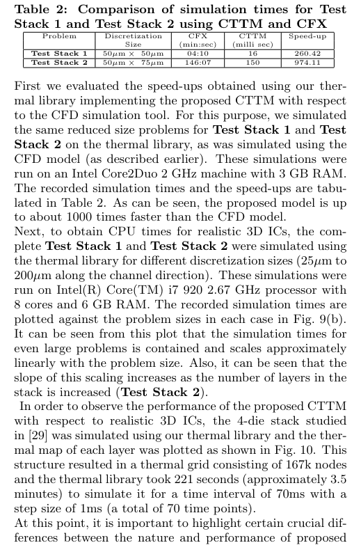
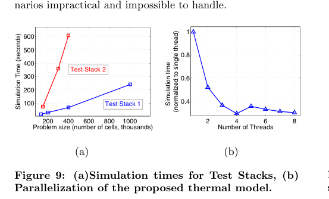
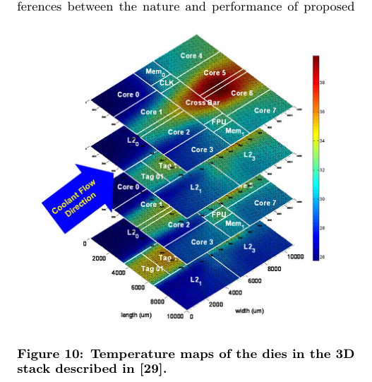

本报告由大模型自动生成，可能存在理解、归纳或数据转述错误；请以原论文为准。 3D-ICE: fast compact transient thermal modeling for 3D ICs with inter-tier liquid coolingArvind Sridhar, Alessandro Vincenzi, Martino Ruggiero, Thomas Brunschwiler, David Atienza · http://infoscience.epfl.ch/record/149790/files/Sridhar ICCAD 2010_proceedings.pdf · 2010 · 原文 · PDF 报告模型：gemini-3.1-pro-preview / high 这是一篇针对 2010 年发表在计算机辅助设计领域的重要论文《3D-ICE: Fast Compact Transient Thermal Modeling for 3D ICs with Inter-tier Liquid Cooling》的详细解读。为了帮助您准确理解，本文将按原文的章节顺序，详细阐述其问题背景、核心方法、物理及数学模型推导以及实验结果。 在正式介绍之前，首先为您补充理解本文所需的核心背景：3D IC（三维集成电路）与层间液冷（Inter-tier Liquid Cooling）。随着芯片工艺的发展，传统的二维平面芯片由于互连线的缩放限制，性能提升遭遇瓶颈。3D IC 是一种通过TSV（Through-Silicon Vias，硅通孔，一种穿透硅基板的垂直电互连技术）将多层裸芯片（Die）垂直堆叠在一起的架构。这种架构极大提升了存储器与计算核心之间的带宽。然而，层叠架构导致芯片单位面积的散热量剧增，传统的风冷和背面散热器无法有效导出内部热量。为了解决这一物理限制，硬件设计引入了层间微通道（Microchannel）液冷技术——即在层与层之间的硅基板上刻蚀出微米级的通道，通过泵入冷却液（如纯水）进行强制对流散热。本文讨论的层级处于系统级物理仿真与 EDA（电子设计自动化）分析层，其目标是将复杂的流体力学传热过程抽象为一个可以与传统芯片热模拟器兼容的快速、紧凑的数学模型。 1. 介绍 (Introduction)本节主要交代了研究动机。在 3D IC 中，多核处理器的垂直集成带来了严重的局部热点（Hotspot）问题，热流密度可达 。如果仅依赖传统的背面空气冷却，堆叠芯片内部的温度将超出安全运行阈值。因此，层间微通道液冷成为最具扩展性的解决方案。 问题背景与 EDA-架构协同的必要性：引入液冷后，计算机体系结构设计师在设计早期就需要进行“热感知（Thermal-aware）”的架构探索。例如，架构侧需要知道：如果当前计算任务导致某几个核心功耗飙升，冷却液是否能及时把热量带走？需要消耗多大的泵送功率（Pumping power）来加速流体？为了回答这些问题，需要进行动态热管理（Dynamic Thermal Management, DTM），这就要求 EDA 工具能够提供精确且快速的瞬态（Transient，即随时间变化）温度反馈。然而，现有的商用 CFD（Computational Fluid Dynamics，计算流体力学，背景补充：一种通过数值求解流体控制方程来模拟流体流动和传热的通用工程软件） 工具极其缓慢，无法满足架构师动辄仿真数百万个时钟周期的需求。 为此，作者提出了 3D-ICE，这是一个紧凑瞬态热模型（Compact Transient Thermal Model, CTTM）。其核心大意是通过有限差分法，将包含固态硅和液态冷却剂的 3D IC 抽象为等效的 RC（电阻-电容）电路网络，在保证极高准确率的同时，实现了比商用 CFD 工具快近上千倍的仿真速度，并且无缝兼容传统的热分析工具（如 HotSpot）。 2. 相关工作 (Previous Work)作者回顾了现有的热模型并指出了它们的局限性。针对固体导热，现有的工具（如 HotSpot）使用有限差分法将芯片离散化，并利用交替方向隐式（ADI）等数学技巧实现了快速瞬态仿真，但它们没有提供处理强制对流液冷的机制。 对于液冷模型，大多数文献只提供经验性的稳态（Steady-state，即温度达到平衡不再随时间变化）相关方程。近期（指本文发表前的 2009 年）Mizunuma 等人提出了一种用于 3D IC 微通道的稳态热模型，该模型通过在流体通道壁内增加四个额外的温度节点来模拟“热尾流（Thermal wake，指上游加热导致下游温度升高的现象）”。但作者指出该模型存在三个致命缺陷：首先，它是稳态的，无法用于瞬态动态热管理；其次，每个网格增加四个节点导致系统矩阵规模剧增；最后，每次改变流体条件（如流速）都需要重新运行昂贵的数值预仿真。这些问题正是 3D-ICE 要解决的。 3. 3D 堆叠 IC 架构 (3D Stacked IC Architecture)本节定义了本文建模的物理硬件对象。图 1 (Fig. 1) 展示了作者考虑的典型 3D 堆叠架构以及他们用于验证测试的真实物理测试载具（Test vehicle）。在这个架构中，微通道被刻蚀在芯片背面的硅基板中，TSV 则穿插在通道之间的硅墙中。流体歧管（Fluid manifold）安装在封装上，负责将冷却液分配到各个通道。  硬件事实与约束：由于微通道嵌在芯片内部，其流道截面尺寸极小（通道宽和硅墙宽约为 ）。与传统的背面散热冷板相比，层间液冷的冷却液质量流量通常只有前者的十分之一，这意味着流体在从入口流向出口的过程中，自身温度会显著升高（实验测量最高升温达 ）。因此，模型必须能够精确追踪流体沿通道流动时的温度梯度变化。 4. 提出的紧凑瞬态热模型的开发 (Development of the Proposed CTTM)这是本文的核心理论部分，作者通过推导控制方程，将流体力学问题降维转换为电学网络问题。作者将整个芯片在空间上切分为网格，每个网格单元称为一个热单元（Thermal Cell），它代表了物理空间中一块具有具体长、宽、高的矩形体积。 4.1 传统的固体紧凑建模 (Conventional compact modeling of solids)作者首先从固体的能量守恒定律出发。对于一个任意固体控制体积 （如图 2(a) 所示），其热力学控制方程为公式 (1)：  符号定义： 为时间（原文未说明单位）； 代表控制体积的空间域； 是材料密度（原文未说明单位）； 是材料的比焓（原文未说明单位）； 是控制体积的表面积（原文未说明单位）； 是材料的热导率（原文未说明单位）； 是绝对温度（原文未说明单位）； 原文未定义； 是表面的单位法向量（原文未说明单位）； 是体积内的热量生成率（原文未说明单位，由芯片发热产生）。该公式左侧第一项表示体积内储存热量的变化率，第二项表示通过热传导流出表面的热量，右侧表示内部热源产生的总热量。 令体积 并在各向同性假设下，微分形式为公式 (2)： (注：原文此处存在明显的排版遗漏。公式 (2) 中拉普拉斯项 前缺失了热导率 。根据量纲分析及经典传热学，正确的形式应为 。) 此处 定义为材料的体积比热容（原文未说明单位）。 图 3 展示了如何将单层硅离散化为 3x3 的热单元阵列。对于空间坐标索引为 ，离散长度分别为 的网格，空间导数用中心差分展开得到公式 (3)。这里不再赘述展开项，其核心意义在于引出电-热类比：温度等效为电压，热流等效为电流。  每个热单元（图 4）被建模为一个包含六个电阻和一个电容的节点。公式 (4) 定义了这些元件的值： 热导 分别代表上下、南北、东西方向的传导率（原文未说明单位，下标含义：原文明确指出“'north' here represents conduction in the +y direction, 'west' represents conduction in -x direction and so on”），计算公式为 ，其中 是硅热导率， 是传热截面积， 是传热距离。热容 （原文未说明单位），其中 为单元的长、宽、高。  通过将所有相邻网格连接，形成了常微分方程组 公式 (5)： 其中 是对称的块三对角电导矩阵， 是包含所有节点温度随时间变化的向量， 是包含所有电容的对角矩阵， 是包含芯片功耗（热源）和边界条件的输入向量（原文均未说明上述矩阵和向量的维度）。 4.2 液体紧凑建模 (Compact modeling of fluids)当控制体积中存在流动的液体时，必须在能量方程中加入对流项。公式 (6) 在公式 (1) 左侧增加了一项 ，其中 是流体流出表面的速度向量（原文未说明单位）。这一项代表流体流动带走的热量。 对应的微分形式变为公式 (7)： 左侧第三项是由于流体流动产生的散度项。作者敏锐地指出，在电路类比中，这一项不再是简单的电阻，而表现为一个**“受温度控制的热源（temperature controlled heat source）”**。 在假设流体沿单向（方向，定义为“北”向）流动的条件下，展开为差分形式得到公式 (8)。公式 (8) 包含流体在三个方向上的导热率 ，以及新增的对流项 。其中 是流体在 方向的平均速度， 是垂直于流向的截面积， 和 分别是流体网格后端流出面和前端流入面的表面温度。 4.3 微通道的紧凑模型 (Compact model for microchannels)本节将流体模型具体应用到 3D IC 的物理结构上。图 3(b) 显示，微通道被包裹在硅墙之间。 设计选择与物理简化：由于强制对流带走的热量比流体自身在流动方向上的热传导大好几个数量级，作者选择在公式 (8) 中忽略流体沿 方向的热传导项（即对应的热导 和 被舍弃）。这种设计选择极大地简化了模型。 由于对流项依赖于前后表面的温度，它在等效 RC 电路中被转换为一个**“压控电流源（voltage-controlled current source）”。 流速由公式 (9)** 给出：，其中 是每个微通道的体积流量（原文未说明单位，由外部泵的设定决定）。 对流项的具体计算由公式 (10) 表示：其系数定义为 （原文未说明单位）。为了计算表面温度 ，作者使用相邻两个网格节点的温度取平均值的策略。 对于微通道入口，流入面温度被硬性设定为冷却液的初始温度 （属于狄利克雷边界条件）；对于出口，假设流出后不再升温，温度梯度设为零（诺伊曼边界条件）。 接下来，必须计算通道壁面（硅）与内部流体之间的热交换能力。这是通过流体力学中的对流换热系数 （原文未说明单位）决定的。公式 (11) 将上下侧面和左右侧面的传热电导 和 分别定义为换热系数乘以对应的接触面积，其中下标 和 分别代表微通道强制对流的垂直和侧面换热系数（vertical and side heat transfer coefficients for microchannel forced convection）。 换热系数通过公式 (12) 计算：。其中 为冷却液本身的热导率； 为通道的水力直径（定义为 ，用于将矩形通道等效为圆形管道的物理量）； 是努塞尔数（Nusselt number，无量纲），代表对流传热强度与流体自身导热强度的比值。 关键的物理约束与模型优势：作者直接采用了流体力学文献（London and Shah）推导出的微通道努塞尔数经验相关式——公式 (13)。该公式表明， 和摩擦因数雷诺数乘积 () 仅仅是通道宽高比 的函数。这意味着，在通道尺寸确定的前提下，假设流体处于完全发展的层流状态，其热边界条件不随流速变化。 正是因为利用了这一物理约束，3D-ICE 只需要通过解析公式计算一次换热系数即可，彻底免除了先前方法（如 Mizunuma 等人）中“流速一变就需要重新跑数值预仿真”的沉重计算代价。 由于流体是单向流动的（热量被单向带走），系统传导矩阵 不再是对称矩阵。这个不对称性在数学上准确反映了对流系统的非互易性物理本质。 5. 实现特性 (Implementation Features)本节解释了上述理论如何转化为软件工具。3D-ICE 是用 C 语言编写的软件库。 跨层接口的数据流与 EDA 协同：该工具接受的输入包括芯片物理层面的网表（描述堆叠方式、材料）、平面图（Floorplan，描述电路模块位置）和网格离散化尺寸。特别地，对于系统级架构师，各个电路模块随时间变化的功耗（Power dissipation values，热源输入）可以通过文本文件提供，或者在软硬件协同仿真（HW-SW co-simulation）中，通过网络套接字（Network socket）从外部的硬件仿真平台实时输入给 3D-ICE，3D-ICE 随之输出瞬态温度波形供系统参考。 在数值求解方面，公式 (5) 被使用向后欧拉法（Backward Euler method，一种无条件稳定的隐式积分方法）进行了数值离散，得到公式 (14)： 化简为 。 (注：原文在公式 (14) 中使用了字母 表示数值积分的时间步长。为了与前文表示热单元高度的 区分，此处解释时补充下标标注为 。) 是待求的 时刻的系统温度向量，其中下标 的含义为瞬态仿真期间的第 个时间点（ denotes the time point during the transient simulation）。方程最终交由稀疏线性方程组求解器（如 SuperLU 或 KLU 库）进行快速求解（原文未说明矩阵 和向量 的维度）。 6. 实验结果 (Experimental Results)作者进行了多组实验来评估 3D-ICE 的准确率和计算性能。基准真相（Ground truth）由商用有限体积法 CFD 工具 Ansys CFX 经过漫长计算后提供。 实验设定与设计选择：测试结构分为 Test Stack 1（2 层硅芯片，中间 1 层微通道）和 Test Stack 2（3 层硅芯片，旁边分布 4 层微通道）。芯片面积为 10mm x 10mm。表 1 (Table 1) 列出了详尽的几何和材料参数设定（如液冷流量定为 48mL/min 等）。在 CFD 对照组中，为了节省时间，作者采用了基于对称边界条件的物理简化（仅仿真通道的一半）。然而，由于 3D-ICE 计算成本极低，在 3D-ICE 中对整个堆叠芯片进行了全仿真。作者将 3D-ICE 中的网格（Thermal Cell）尺寸选定为 或 。  6.1 CTTM 模型的准确率评估
6.2 3D-ICE 的性能评估表 2 (Table 2) 直观地展示了为何这个工具对架构师至关重要：仿真同样的 Test Stack 2，CFD 花费了 146 分钟，而 3D-ICE 仅仅耗时 150 毫秒，达到了 974.11 倍的加速比。 图 9(a) 显示仿真时间随模型网格数（Problem size）的增加呈近似线性增长，具有极好的可扩展性。 为了展示系统级仿真的可行性，作者还跑了一个包含 16.7 万个网格节点的真实 4 层堆叠芯片测试用例（图 10 展示了各层的温度地图），仿真 70 毫秒的物理时间，耗时约 3.5 分钟。    作者再次将 3D-ICE 与之前的 Mizunuma 模型对比，说明了这种性能飞跃的来源：3D-ICE 在流体域每个物理网格只需 1 个节点（相比之下旧模型需 4 个），使得总方程规模减小了 60%；且不需要重新跑预仿真，直接解析计算对流热源。 6.3 热库的并行化作者将底层的 SuperLU 求解器替换为多线程版本并在 8 核 CPU 上测试。图 9(b) 的曲线表明，随着线程数增加到 4 或 5，仿真时间显著下降，展现了算法具有多核并行加速的潜力（尽管受限于直接求解法的本质特性，加速比在更多线程后趋于平缓）。 7. 结论与全篇主线串联 (Conclusion & Summary)主线总结： 这篇文章面对的核心问题是：如何让计算机体系结构和芯片物理设计师在设计阶段早期，就能快速、准确地预估 3D 堆叠芯片内部复杂的流体强制对流散热效果。 推演过程：作者没有选择去优化缓慢的流体力学仿真器本身，而是采取了降维与等效抽象的方法。他们从底层能量守恒微分方程出发，剥离了次要的物理效应（如流体纵向传热），利用流体力学中已有的经验公式（努塞尔数），将液冷带来的对流项巧妙地转换成了等效 RC 电路网络中的“压控电流源”。 最终解决：这一抽象不仅使得含液冷结构的热分析问题被拉回到了与传统固态热分析一样的数学框架内（求解线性微分方程组），而且实现了相较于传统 CFD 软件上千倍的速度飞跃（仅 3.4% 误差），最终形成了一款开源软件库（3D-ICE），成功打通了架构层动态功耗输入与物理层瞬态温度输出之间的联合仿真链路。 关键假设与局限性提醒： 需要特别注意的是，3D-ICE 极高的运算速度依赖于一个强物理假设：冷却液在微通道内始终处于“流体力学和热力学完全发展的层流状态”，这使得表面换热系数可以仅通过几何比例解析求解。这意味着，如果用户未来设计的通道结构存在剧烈的截面突变、分支歧管内的复杂扰流，或者是流速大到产生湍流，该经验公式（公式 13）将不再适用，工具的准确率可能会大幅下降（需重新提供对应的 相关式或退回 CFD 进行预提取）。此外，模型目前假设通道几何形状是恒定的且均匀分布，这也是为了保证矩阵结构的规整性和极速求解所做出的妥协。 |